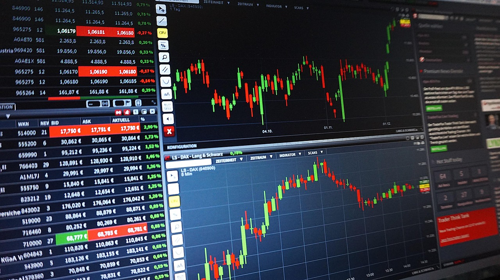
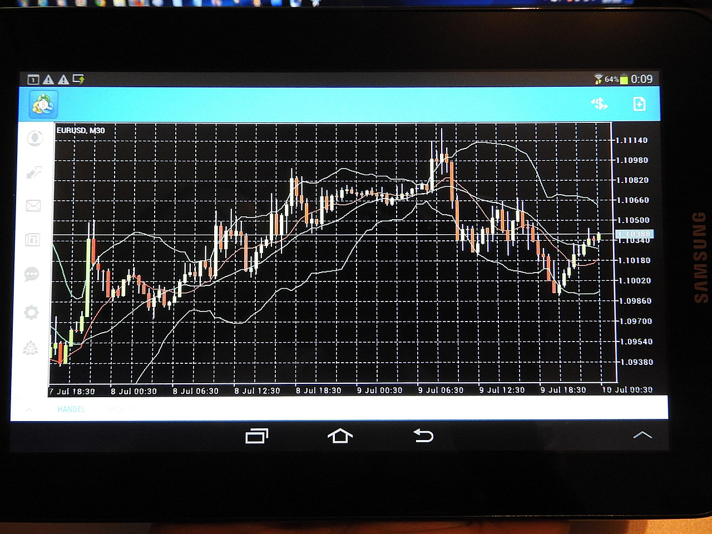

TL;DR
For beginner ETF investors, focus on low-cost ETFs like VOO. Avoid emotional trading and follow a structured monthly review process to enhance your investments. Limit risky trades and always do thorough research on your choices.
Quick Answer
### Quick Answer
Start your ETF trading journey with a focus on low-cost options, such as the Vanguard S&P 500 ETF (VOO), which has an expense ratio of just 0.03%.
As a beginner, consider investing between $1,000 and $2,000 initially; this allows you to diversify your holdings without a significant upfront commitment.
One crucial tip is to avoid knee-jerk reactions to market fluctuations. For example, if the market experiences a sudden dip, like a 5% drop in a week, resist the urge to sell out of fear.
Instead, remind yourself of your investment strategy. Set a plan to review your holdings monthly, updating your knowledge on market trends and sector performances.
This practice can help you stay informed and curb emotional trading.
Consider a scenario where you initially invest $1,500 in VOO. Over six months, market volatility sees your investment fluctuate between $1,400 and $1,600.
By adhering to your strategy and continuously educating yourself, you avoid panic selling
Why Most Beginners Pick the Wrong ETFs
### Why Most Beginners Pick the Wrong ETFs
Many beginners mistakenly believe that high historical returns predict future performance, leading to poor investment decisions based on emotions rather than thorough research.
For instance, a new investor may look at an ETF that has returned 50% over the past year and assume it’s a guaranteed winner. However, such returns might be inflated due to a market anomaly or temporary trend.
The reality is that past performance is not indicative of future results, and without a proper evaluation, beginners risk buying at market peaks.
Overtrading exacerbates this issue. Individuals may frequently buy and sell ETFs, hoping to capitalize on price fluctuations without a clear strategy.
For example, if a beginner purchases an ETF at $100 and, within a week, succumbs to panic selling when it dips to $95, they may incur trading fees and potentially realize a taxable capital gain if they had initially bought at a lower price.
Excessive trading like this can eat away at investment returns due to transaction fees, which can range from $5 to $10 per trade, and may also trigger capital gains taxes if held for less than a year.
Another pitfall is chasing trendy sectors such as cryptocurrency or electric vehicles, which are often perceived as quick wealth strategies.
For instance, during a recent crypto boom, many investors jumped on the latest crypto ETF, only to watch it drop 40% within weeks after the initial hype subsided.
This impulsiveness disregards essential risk management principles and an in-depth evaluation of a sector’s fundamentals.
Consider a beginner who heard about the latest electric vehicle ETF launch. Excited, they invested $1,000 without understanding how price volatility can affect their investment.
A 30-Day Screening Process
Establish a structured monthly workflow to enhance your ETF trading. Follow these steps for a 30-day screening process: 1. Set Goals: Define your investment horizon and risk tolerance. Are you looking for short-term gains or long-term stability? 2. Identify ETFs: Research ETFs based on specific criteria such as expense ratios, sector allocation, and performance. Use platforms like Morningstar or Yahoo Finance for data. 3. Create a Watchlist: List your top five ETFs to track closely. This list should include a mix of both aggressive and conservative options. 4. Monitor Performance: Every week, review their performance relative to benchmarks. Look for deviations and assess if they align with your investing strategy. 5. Reevaluate or Rebalance: At the end of the month, assess if any ETF should be replaced based on your criteria and market conditions.
A Real Scenario for Beginner Investors

### A Real Scenario for Beginner Investors
Imagine a beginner investor starting with just $100 per month. Instead of waiting until they have a large lump sum, they initiate a simple recurring investment plan.
For instance, they allocate $60 into a broad market ETF, such as the S&P 500 ETF (SPY), which provides exposure to the 500 largest U.S. companies.
They might then designate $20 to a dividend ETF like the Vanguard Dividend Appreciation ETF (VIG), known for its track record of increasing payouts.
This choice not only aims for capital gains but also generates a modest income. The remaining $20 is held in cash or invested in a bond fund for stability, perhaps something like the iShares U.S.
Treasury Bond ETF (GOVT).
At first glance, this strategy may seem small, yielding minimal returns during periods of market volatility. However, the crucial aspect here is behavioral adaptation.
Instead of getting swayed by market fluctuations or trying to time their investments—a common pitfall for first-time investors—this individual is establishing a disciplined routine.
Over the course of a year, they have contributed $1,200 to their investment portfolio. This controlled and consistent approach allows them to experience the natural ebb and flow of the market.
For example, let’s consider a specific scenario within this timeline. Suppose they start investing in January when the market is experiencing a slight dip, leading their total portfolio value to hover around $1,150 by June.
Instead of feeling anxious or tempted to withdraw or shift their strategy, they continue with their monthly plan. By December, when the market rallies, their portfolio value may rise to around $1,350.
This investment strategy not only results in a gain but also equips them with valuable lessons about market cycles.
Mistakes That Cost Real Money

Two common mistakes that beginners often encounter are emotional trading and lack of research. Emotional responses to market fluctuations can lead to impulsive trades.
For example, when a sudden market drop occurs, a beginner might sell off their ETFs fearfully, locking in losses. This decision can be detrimental, especially if the market rebounds shortly after.
Additionally, lacking thorough research results in investing in ETFs without understanding their underlying assets or long-term viability. Ignoring important factors, like expense ratios or sector focus, may result in lower returns and higher costs over time.
Which Tools or ETFs Make This Simpler
Begin with user-friendly investment apps like Robinhood or M1 Finance, which simplify ETF trading for novices. These platforms provide intuitive interfaces and helpful analytics without overwhelming fees.
Start with low-cost ETFs like the Schwab U.S. Broad Market ETF (SCHB) that track large segments of the market.
For portfolio management, consider tools like Personal Capital or YNAB that offer budget tracking alongside investment advice. Additionally, services like ETF.com can give you extensive research and comparison options.
FAQ
What are the most common mistakes in ETF trading?
Common mistakes include emotional trading, overtrading, and inadequate research into ETFs. These can lead to significant losses or missed opportunities.
How can beginners develop a trading plan?
To develop a trading plan, set clear investment goals, determine your risk tolerance, and follow a structured screening process, like the 30-day guide provided in the article.
This article has been reviewed for practical usefulness and is updated when information changes.
Next step
Use the article as a decision point, not just reading material. Your next system matters more than more browsing.
Search more articles
Find related tools, workflows, and guides.